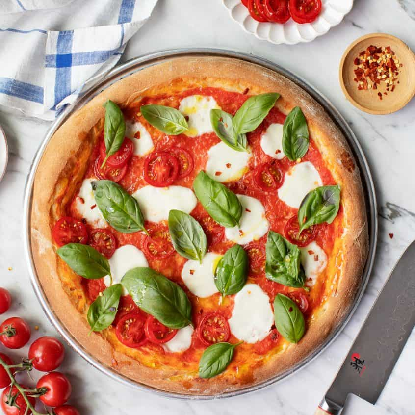
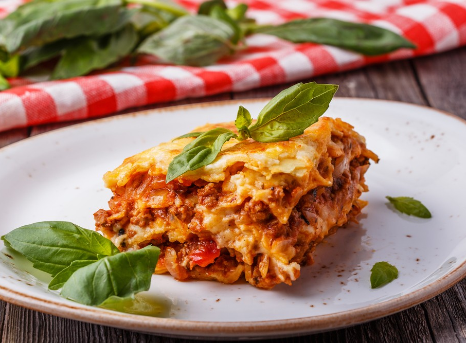
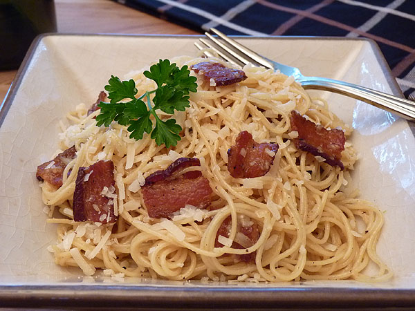

Qkie
Haus
About
Home
Trending
Italian Menu
Buon appetito con la ricetta!
Pizza Margherita

Ingredients:
Pizza dough (flour, water, yeast, salt, olive oil)
Tomato sauce
Fresh mozzarella cheese
Fresh basil leaves
Olive oil
Salt
Recipe:
Preheat oven to 250°C (480°F).
Roll out the pizza dough and spread it on a pizza stone or baking sheet.
Spread tomato sauce evenly over the dough.
Add slices of fresh mozzarella on top.
Bake in the oven for 7-10 minutes, until the crust is golden and the cheese is melted.
Remove from the oven and top with fresh basil leaves and a drizzle of olive oil.
Serve immediately.
lasagna

Ingredients:
Lasagna noodles
Ground beef
Tomato sauce
Onion, garlic
Ricotta cheese
Mozzarella cheese
Parmesan cheese
Béchamel sauce (butter, flour, milk, nutmeg)
Olive oil, salt, pepper
Recipe:
Cook lasagna noodles according to package instructions.
In a pan, sauté onion and garlic in olive oil, add ground beef, and cook until browned.
Add tomato sauce, season with salt and pepper, and simmer for 15-20 minutes.
Layer the ingredients in a baking dish: start with meat sauce, followed by noodles, ricotta, mozzarella, béchamel, and repeat.
Top with grated Parmesan cheese.
Bake at 180°C (350°F) for 25-30 minutes until bubbly and golden.
Let it sit for 5 minutes before serving.
Spaghetti Carbonara

Ingredients:
Spaghetti
Pancetta (or guanciale)
Eggs (2 large)
Pecorino Romano cheese
Black pepper
Salt
Recipe:
Cook spaghetti until al dente, then reserve some pasta water and drain.
In a separate pan, cook pancetta until crispy.
Whisk eggs with grated Pecorino cheese and black pepper in a bowl.
Add drained spaghetti to the pan with pancetta, stirring quickly to coat the pasta.
Remove from heat, then add the egg and cheese mixture, stirring continuously. Add pasta water to create a creamy sauce.
Serve immediately with extra Pecorino and pepper on top.